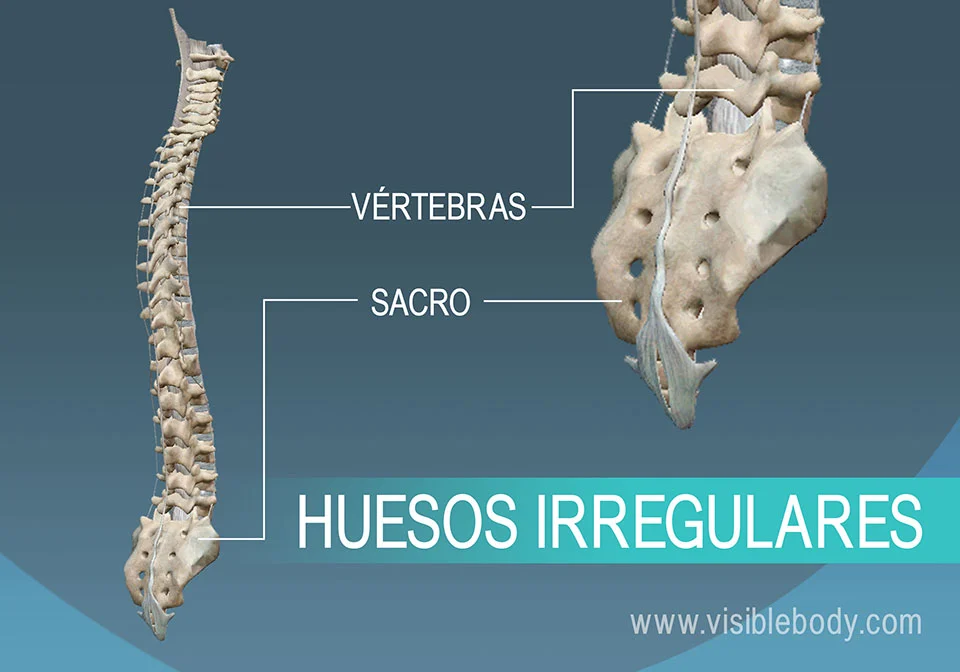

Explora los diferentes tipos de huesos en el cuerpo humano
Huesos Largos
Los huesos largos son aquellos que tienen una longitud mayor que su ancho y grosor. Su función principal es soportar el peso del cuerpo y permitir el movimiento. Estos huesos están formados por una diáfisis (cuerpo del hueso) y dos epífisis (extremos del hueso) que están conectadas por una zona llamada metáfisis. Además, tienen cavidades internas que contienen médula ósea, donde se producen las células sanguíneas.
Características:
Son más largos que anchos.
Están formados por tejido compacto en su exterior y esponjoso en su interior.
Su función principal es la de soporte y movilidad.
Contienen médula ósea roja, que produce las células sanguíneas.
Ejemplos de huesos largos:
Fémur (el hueso más largo del cuerpo humano)
Húmero (hueso del brazo)
Radio y Cúbito (huesos del antebrazo)
Tibia y Peroné (huesos de la pierna)
Huesos Cortos
Los huesos cortos son aquellos cuya longitud, anchura y grosor son casi iguales. Son huesos compactos y generalmente tienen una forma cuadrada o rectangular. Su función principal es proporcionar estabilidad y soporte, sin movimientos amplios como los de los huesos largos. Estos huesos están formados principalmente por hueso esponjoso recubierto por una capa delgada de hueso compacto.
Características:
Son casi igual de largos que anchos.
Están compuestos mayoritariamente por hueso esponjoso.
Actúan como amortiguadores en las articulaciones.
Permiten movimientos limitados, pero muy importantes para la estabilidad.
Ejemplos de huesos cortos:
Huesos del carpo (muñeca)
Huesos del tarso (tobillo)
Huesos Planos
Los huesos planos son aquellos que tienen una estructura delgada y ancha. Estos huesos proporcionan protección a los órganos internos y sirven como puntos de anclaje para los músculos. Son principalmente huesos que cubren áreas vulnerables, como el cerebro y el corazón, y proporcionan una base sólida para los músculos que permiten movimientos complejos.
Características:
Son delgados, anchos y generalmente curvados.
Forman una capa protectora alrededor de los órganos internos.
Actúan como puntos de inserción para los músculos.
Contienen médula ósea roja en su interior, lo que permite la producción de células sanguíneas.
Ejemplos de huesos planos:
Escápula (omóplato)
Esternón
Huesos del cráneo (como el frontal y parietales)
Costillas
Huesos Irregulares
Los huesos irregulares tienen formas complejas que no encajan en ninguna de las categorías anteriores. Su principal función es proteger los órganos y permitir el movimiento en ciertas partes del cuerpo, como la columna vertebral. Estos huesos suelen tener una estructura interna de hueso esponjoso rodeado por una capa delgada de hueso compacto.
Características:
Tienen formas no definidas, lo que les permite adaptarse a diversas funciones.
Contienen hueso esponjoso en su interior y hueso compacto en su exterior.
Proporcionan protección y soporte estructural.
Ejemplos de huesos irregulares:
Vértebras (huesos de la columna vertebral)
Mandíbula
Huesos del rostro, como el maxilar

Huesos Sesamoideos
Los huesos sesamoideos son huesos pequeños y redondeados que se desarrollan dentro de un tendón. La principal función de estos huesos es proteger los tendones de las presiones y facilitar el movimiento, actuando como una especie de "pivote" para mejorar la eficiencia de las articulaciones. Además, ayudan a reducir la fricción en las articulaciones donde están ubicados.
Características:
Son pequeños y redondeados.
Se desarrollan dentro de los tendones, donde hay presión o fricción.
Mejoran el apalancamiento de los tendones y protegen las articulaciones.
Ejemplos de huesos sesamoideos:
Rótula (hueso de la rodilla)
Huesos sesamoideos en las manos y pies (como los de la base de los dedos)